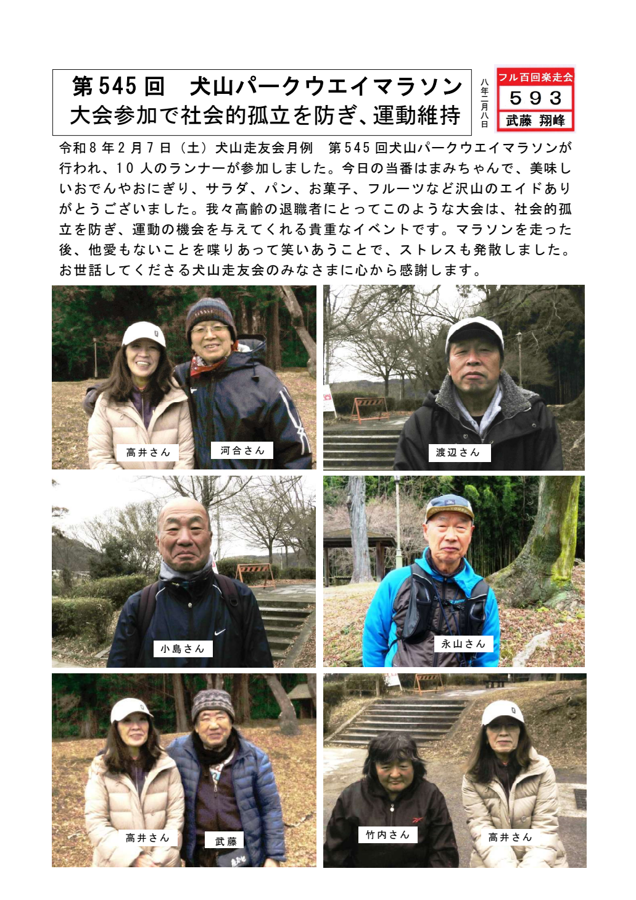

2026-02-07 05:22:49
2026年2月7日（土曜日）（場所：氷室公園 天候：曇り 気温：10℃）（エイド担当：横幕さん）
| No | 氏名 | 種目 | タイム | フル百 |
|---|---|---|---|---|
| 1 | 渡辺和次 | 18km | 2:30:00 | 804 |
| 2 | 高井妙子 | 13km | 2:20:00 | 863 |
| 3 | 河合邦純 | 13km | 2:00:00 | 549 |
| 4 | 小島博史 | フル | 6:27:00 | 745 |
| 5 | 石原久行 | 10km | 2:00:00 | 520 |
| 6 | 竹内弥富 | 20km | 3:50:00 | 647 |
| 7 | 武藤 彰 | 10km | 2:35:17 | 593 |
| 8 | 永山敏巳 | 38km | 6:31:52 | 820 |
| 9 | 森 五月 | |||
| 10 | 森けい子 |
（コメント：渡辺さん） 朝がたは冷たい風が吹き荒れて走るには億劫でしたが時間がたつと 風もやみ走り易い状況でした。エイド担当して頂いた横幕さんには感謝します。
